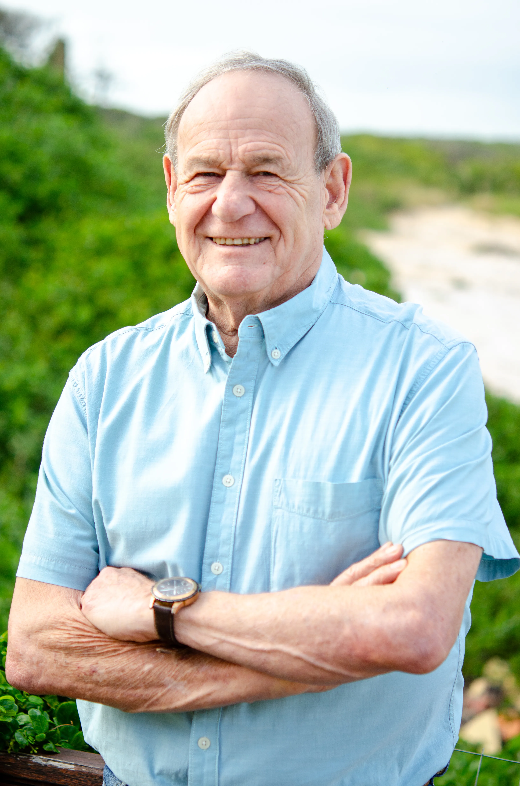
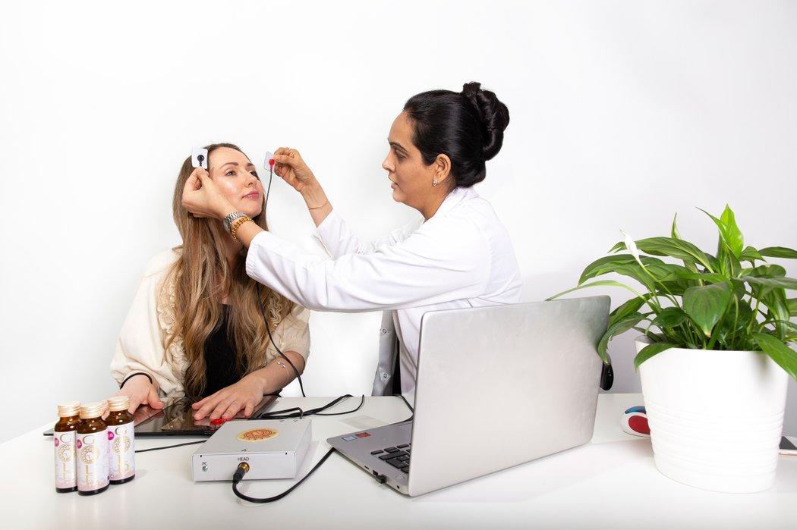
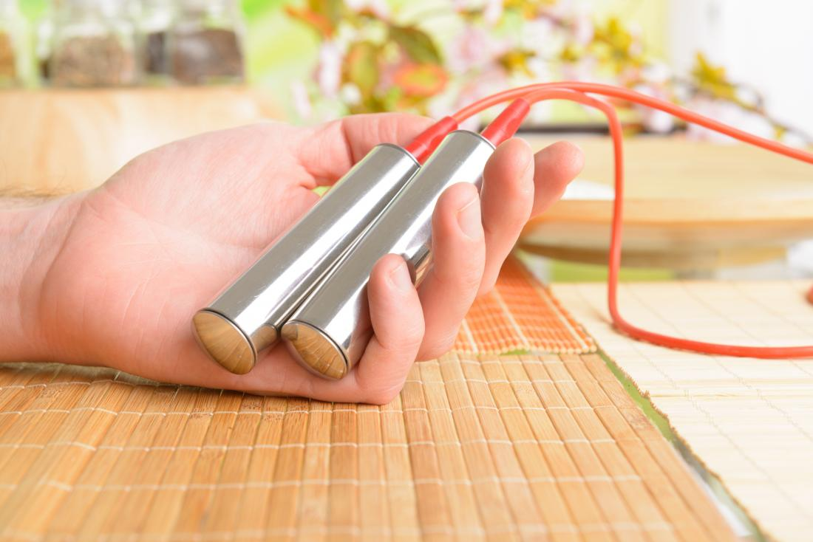
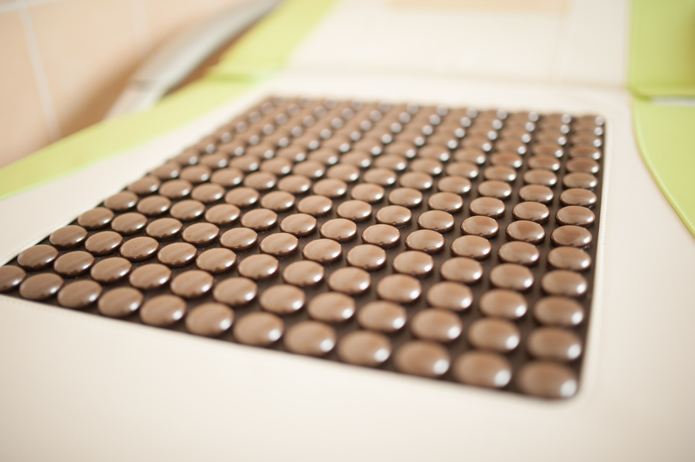

Cancer Support
Individualised support around nourishment, resilience, treatment tolerance and recovery, designed to work alongside the guidance of your oncology team.
Personal naturopathic care from Dr. Bernard Lurie for complex and long-standing health concerns — in South Africa and remotely.

Bernie works with people seeking naturopathic support across the following areas, including alongside care from their existing medical practitioners.
Naturopathic care is supportive and does not replace necessary medical, oncology or emergency treatment. Coordination with your treating practitioners is encouraged.
Individualised support around nourishment, resilience, treatment tolerance and recovery, designed to work alongside the guidance of your oncology team.
Whole-person support for persistent fatigue, inflammatory and autoimmune concerns, arthritis and other complex long-term health patterns.
Natural support for thyroid, adrenal, menstrual, menopausal and reproductive health concerns for women and men.
Support for IBS, candidiasis, bloating, irregular digestion and the wider relationship between gut health, energy and immunity.
Carefully considered nutritional and lifestyle support for reducing avoidable exposures and strengthening the body's normal elimination pathways.
Preventive care, constitution assessment and practical strategies for people who want to protect their health before illness takes hold.

Dr. Bernard Lurie is a qualified Naturopath with nearly four decades of clinical experience — a Doctor of Science in Naturopathy, herbalist, iridologist, and published author. He has dedicated his career to guiding patients back to health through evidence-informed natural medicine.
A consultation may draw on herbal medicine, iridology and clinical nutrition. The assessment and additional in-practice therapies available are shown below.




Herbernie tinctures draw on Dr. Lurie's formulation experience and are available for ongoing use between appointments.
Ask About the RangeYour first appointment gives Bernie time to understand your history, symptoms and daily habits before recommending practical next steps.
Begin with your full history, concerns and the changes you have already noticed.
Use the appropriate tools and observations to look for patterns—not isolated symptoms.
Leave with clear next steps and natural support designed around your real life.

What a wonderful ointment! My husband had a raw sore behind his ear for over 2 years that just wouldn't heal. Doctors wanted him to get a skin graft. We came to see Dr. Bernard Lurie, and started using the Comfrey and CancerBush ointment. 4 months later, it was HEALED. WONDERFUL OINTMENT! Thank you Dr. Lurie

Morning Jo-anne. I just wanted to share with you that Marlien is doing so well. She had a big gala this weekend and is now Conference Champion in 200 Breast. She has lost weight and is thriving. It is just her skin that remains a challenge but that is due to the chlorine. This too shall pass when swimming is behind her. Thank you for all you do for her. We truly appreciate you and Dr Lurie.

"Hi Jo, just wanted to let you know... I have had huge body changes over the weekend. All my pain in my back and colon are gone. I am feel great. Loving the juices! Thank you, Thank you, Thank you!

"Dr. Lurie, I am incredibly grateful for the care and support I received from the moment I walked into your office. Your approach was thoughtful, personalized and focused on getting to the root of the problem. I can honestly say that you helpped me get my health back, and I can't recommend you highly enough! Thank you!"
These accounts are reproduced from the previous Herbernie website without rewriting their claims or personal language.
Personal experiences vary. These accounts are not medical evidence or a guarantee of outcome. Some describe personal decisions about prescribed treatment; they are not advice to stop or change medication. Naturopathic care does not replace necessary medical or oncology treatment.
Firstly I want to thank my Creator and secondly Dr. Lurie for the miracle in my healing.
I had been suffering from cancer for 11 years and within two months on Dr. Lurie’s treatment, I was healed.
It started with breast cancer and thereafter moved to my thigh. In a major operation, my leg was amputated and replaced with a steel pipe. Two years later the cancer spread to my lungs.
The Oncologist in Nelspruit showed me scans and informed me that I would suffocate and die within two months. I was having chemotherapy that cost my medical aid R60 000 per month. I got very ill from the chemo and informed my family that I could no longer carry on with the treatment.
I saw Dr. Lurie and started on his treatment. Within one week, I could already feel my energy levels rise and started with my neglected chores.
Once again, I wish to thank Dr. Lurie for his kindness, which I experienced after many hours over the phone. Nothing was ever too much trouble.
A sad story with a happy ending…
My husband was diagnosed with cancer in the glands of his throat by a specialist. Scans and biopsies were done and it was suggested that an operation and chemotherapy for a couple of months was the only way out.
As well understand, we were very sad about the outcome and decided to go to Durban and see an oncologist there for a second opinion.
The same procedure was followed and the outcome of the tests was the same, except for the warning that an operation should be performed straight away as the lymph gland in the neck was so full of cancer cells that it may overflow and spread to the rest of the body. The operation was not performed as my husband was very apprehensive regarding this matter and was informed by the specialist that part of the face and neck might be slightly lame after the operation.
Before we went to Durban, we met a lady at a health shop and she told us that we should contact Dr. Bernard Lurie as he had been very successful with the treating of several illnesses including cancer. My husband decided to go and see Dr. Lurie. This decision changed our lives. After 3 weeks of his herbal treatment and the right way of eating, my husband felt much better. After 3 months of treatment, Dr. Lurie insisted that my husband should go again for a scan and blood tests and he listened. No traces of cancer could be found.
All I can say is “THANK YOU VERY MUCH DR. LURIE”
Hello Doctor Lurie,
It’s been a long time… I just want to reiterate my thanks and gratitude to you for successfully treating me for Bladder cancer way back in September 2005. Friends and family thought that I was taking a chance by choosing God’s Pharmacy over modern Allopathic treatments, but over the years, I was the one who has the last laugh.
Some friends were real sceptics, but after five years, some insisted that my cure was just a remission; but twenty years late, when I see them, I sometimes taunt them on how they were so very wrong.
I also want to thank you for successfully treating my wife over the past six months for her lung Cancer. She is doing wonderfully.
Here’s wishing you and yours well and further successes in treating others who had lost hope… into the future.
May God bless you
My mom was diagnosed with Acute Myeloblastic Leukemia on the 20 August 2019. She collapsed at work and was admitted on the same day.
The hospital started administering chemotherapy treatment to her on the 22 August 2019. We were told that she must have 6 rounds of Chemotherapy.
A friend told me about Dr Bernie and I also visited his website. I saw testimonies of people who were healed of cancer but was not convinced. I even called one of his patient who has healed from cancer of the bladder. He showed me pictures of him when he was very sick and his recent pictures. However, I was still not convinced that someone might be healed of cancer. So the reason I contacted Dr Bernie is that after the first round of Chemotherapy, my mom’s blood count were decreasing fast and her Oncologist was worried about her condition.
Dr. Bernie gave me advice and on the 3rd day the blood count started increasing at an alarming rate. That is when I decided to buy the cancer kit. I told myself that it will not kill me to try it.... and again I can always work and get more money but my mom's life is more important.
On the 23 September 2019 we started with the intense treatment. My mom was strictly on the vegetable and fruits diet, no sugar and no carbohydrates. After 2 weeks my mom was no longer frail, she was showing improvement. My mom went to the hospital for the 2nd chemo, even though I tried to talk her out of it. She insisted to go back. She went on the 2nd chemotherapy treatment and this time it was bad. She developed a fungal infection. She started hallucinating. She was not responding to the hospital treatment, we almost lost her. The hospital was unable to treat the infection. They tried different antibiotics but all of them failed. I spoke to Dr Bernie who recommended that I carry on with the drops from the cancer kit. I started giving her the medication to fight the infection. I did this while she was in hospital and I could see some improvement. Her blood count started to increase and she was discharged from the hospital. We continued with Dr Bernie’s treatment at home.
On the 12 December 2019 we went to the hospital for her checkup. They took some blood and we waited for the results. We went to see her Oncologist who told us that my mom is cancer free, she will not go through the remaining 4 chemotherapy and they will no longer put a port. In short that is how my mom was healed of Leukemia at the age of 63…… She is strong as a horse, her hair is back and her skin colour is back to normal and can’t wait to go back to work next month (April 2020).
I want to thank God for using Dr Bernie to heal my mom. May God bless you with more wisdom to continue treating other sicknesses effectively.
A year after I had a kidney removed I got cancer of the pericardium, and spend three weeks in hospital. My oncologist suggested enfuron injections.
I decided to consult Dr. Lurie who put me on a strict diet and large doses of herbal medication as well as Glyco Nutrients.
Ten years later I am leading a normal life.
We were introduced to Dr. Bernie Lurie by friends.
My daughter was suffering from a mysterious epilepsy-related condition which she attracted at the age of 30 years.
Dr. Bernie considered her a case study and constantly discussed the matter with us and also suggested that we discontinue the expensive pills she was using. She stopped the medication, which was prescribed by a specialist who had done numerous E.E.G scans on her. It's been 2 years later and she has never had an epileptic attack since.
We put his carrot juice theory to the test with very good results. We always had free access to him for advice and treatment. His knowledge and supplements for various diseases are astonishing.
With excellent human relations, he possesses together with his intelligent summary of a particular problem, he can be a winning combination for the medical field.
I suffered from Chronic Fatigue Syndrome for a period of approx. 14 years, during which I consulted a number of conventional medical practitioners and specialists. Nine years down the line, the coxsackie virus was finally detected in my blood and my condition was diagnosed as M.E. syndrome.
I was extremely relieved to learn what was wrong with me, but then the bad news followed: The conventional medical practitioners had no cure for this disease!!!
I eliminated refined Carbohydrates, wheat, and foods/ drinks containing yeast from my diet but as years went by, I could sense a steady decline of my system.
I finally learned about Dr. Lurie via an acquaintance and consulted him. After a thorough examination, he advised that my system had deteriorated to such an extent that I had already contracted systemic lupus. (Degeneration of the connective tissues of the organs through a slow and painful process)
Dr. Lurie informed me that I was severely ill and that drastic action was required. He gave me 14 different types of herbal medicines and instructed me to eat only vegetables for a period of 6 weeks.
Dr. Lurie was always available on his cell. I even phoned him one morning at 03H00 when I difficulty urinating and suffered from a rapid drop in blood pressure.
I lost 23kg in body mass during the six-week treatment cycle and recovered completely from the disease mentioned above. I have subsequently been consulting Dr. Lurie from time to time whenever I require his advice or my body needed some fine-tuning.
I am extremely grateful for the herbal proficiency of Dr. Lurie.
I would hereby like to thank Dr. Lurie for the new lease of life that I have been granted since being under his treatment.
I have been suffering from asthma and allergies for 34 years, and have been taking up to 6 anti-histamine tablets per day, as well as cortisone tablets, and above all this I used an asthma inhaler at least 20 times a day!!
Since starting his treatment, I’m no longer on any medication as mentioned before and I feel like a person who has emerged from a cocoon. No asthma! No blocked nose, swollen eyes or constant dull headaches! With the suggested diet plan, and the Herbernie Tinctures, a new life has opened up for me.
I lost 8kg in weight and is feeling so good. My husband, who had been away on a business trip for 14 days, could not believe that I was the same person, and friends kept on asking me if I had been away on holiday.
I would like to extent my sincere gratitude to him and I am recommending his natural approach to healing.
My walk with Dr Lurie and my healing from cancer.
I was diagnosed with cancer during 2005. I had testicular cancer.
I was operated on with the cancerous testicle being removed.
I was told that I must also have radiation and chemo theraphy as the cancer had spread in my body. The only thing I knew about cancer patients was that most did not survive.
I had signed a document to say I will go for radiation and chemo.
After being discharged from hospital I prayed and asked the Lord to find me someone who could heal me.
Prior to getting cancer I done competitive cycling in South Africa.
One day I went to Walmer Park shopping center to a particular shop where I bought supplements to take orally to help me perform better in cycling.
When I walked into the shop there stood a man in front of me who was talking to the owner of the shop. I was overwhelmed by the man standing in front of me.I had not yet even seen his face as his back was towards me. He turned around and departed from the shop and I asked the owner of the shop- who is that man?
He asked me why do I want to know who this man was and where I have I been as he did not see me for sometime? I told him I was diagnosed with cancer.
The owner of the shop told me that the gentleman was Dr Lurie and that he could help me with my cancer. He gave me Dr Lurie phone number and I contacted him.
When I look back I realize that by Gods grace I was in that shop at the right time-a prayer that was answered.
I went to meet Dr Lurie. He asked me about my lifestyle and eating habits. Me being thin,i thought I could eat and drink anything. Little did I know that what you eat and drink can have a such a big effect on your health and longevity.
Well it was refreshing to hear a completely different approach as how to deal and be treated for cancer.
I do not quite remember the exact duration or time I was on the supplements and medicine that Dr Lurie formulated and prescribed to me. I think that after 3-4 months I went to have test done at the hospital and they told me there is no trace of cancer.
I was so happy to get this good news. Glory to our Lord for Dr Lurie to cross my path.
It was not easy to adjust to what I was told to eat and drink never mind the taste of the medicines formulated by Dr Lurie and the supplements, I had to drink.
In the meantime I was contacted by a law firm in Cape Town who acted on behalf of the hospital in Port Elizabeth to claim money from me as I had signed documents to say I would go for the follow up treatment with chemo therapy. I told the law firm that I did not go and intend not to go for chemo theraphy as I no longer had cancer.
May the Lord bless the lady from the law firm who said she will fight them even if she must lose her job. She said how can they want to sue you when you had no chemo theraphy. I never heard from them again.
Well that episode in my life was a good eye opener having made me aware as to the benefits of healthy eating and drinking - all the credit to Dr Lurie for helping me transform my life.
My lifestyle has not changed since having cancer. I only eat and drink what can benefit my body-again thanks to Dr Lurie in educating me.
Glory to our Lord and Saviour for you Dr Lurie for crossing my path and helping me heal my body.
With kind regards
My Journey of Healing and Hope
Approximately two decades ago, while living in Nelspruit, Mpumalanga, I was hospitalized with a severe case of pneumonia. Despite intensive medical treatment, my condition did not improve. After undergoing a series of tests and CT scans, doctors identified a compromised gland and opted to remove it for further analysis. The results confirmed a diagnosis of cancer.
Given my family’s history with the disease, I made the personal decision to decline further gland removal and refuse chemotherapy. Shortly thereafter, we relocated to a small farming town in the Eastern Cape. The cleaner air and natural surroundings offered a sense of renewal, and I began self-medicating with herbs such as Aloe Vera to support my health.
However, within a year or two, my health deteriorated significantly. I experienced extreme fatigue, persistent pain throughout my body, and a dramatic weight loss—from a healthy 70kg to under 50kg. At that point, I was advised to consult with Dr. Bernie Lurie , who specializes in herbal treatments.
Dr. Lurie conducted a comprehensive body scan. He prescribed a strict regimen of specific vegetables, fruits, and herbal medication tailored to my condition. Given the severity of my illness and the extent to which the cancer had spread, recovery was gradual. After four months, I began regaining strength and weight, and a follow-up consultation confirmed significant progress.
I continued with a second course of treatment and remained committed to the prescribed diet—more accurately, a healthier way of living. To this day, I remain under the care of Dr. Lurie, taking herbal medication daily and maintaining a balanced, nourishing lifestyle.
This path of treatment has enabled me to live a normal, fulfilling life. I am deeply grateful for the healing I’ve experienced.
Regards
What a wonderful ointment! My husband had a raw sore behind his ear for over 2 years that just wouldn't heal. Doctors wanted him to get a skin graft. We came to see Dr. Bernard Lurie, and started using the Comfrey and CancerBush ointment. 4 months later, it was HEALED. WONDERFUL OINTMENT! Thank you Dr. Lurie
Book a 60–90 minute initial consultation with Dr. Bernard Lurie.